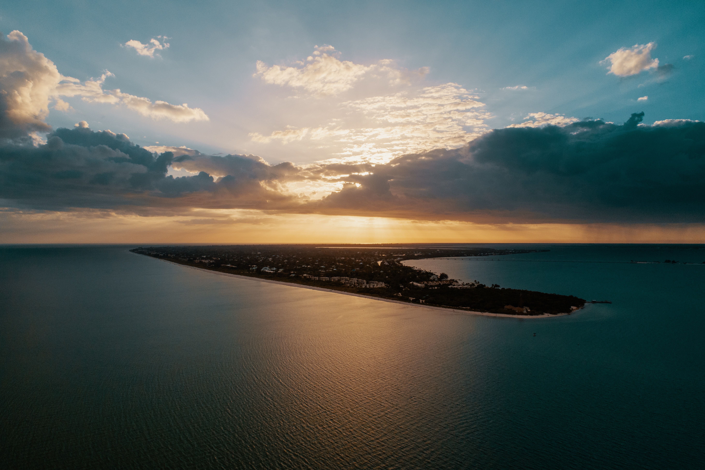

Destaques
PARA QUEM QUER CURTIR AS FÉRIAS !!!



PARA QUEM QUER CURTIR AS FÉRIAS !!!
Você Sabia? As ilhas da Tailândia são as mais visitadas no mundo todo. Não é atoa né?.
Meu nome é Jean,tenho 18 anos e faço um curso Técnico de Informática na IFRJ e sempre curti bastante pasiagens, são tantos lugares no mundo no qual eu penso em visitar e que ainda precisam ser explorados,e criei esse site como motivação para pessoas que gostam de paisagens e de lugares bonitos.Esse é o meu primeiro site que criei.Eu espero deixa-lo(a) satisfeito com o meu site e que possa ao menos tentar servir de expiração para você.